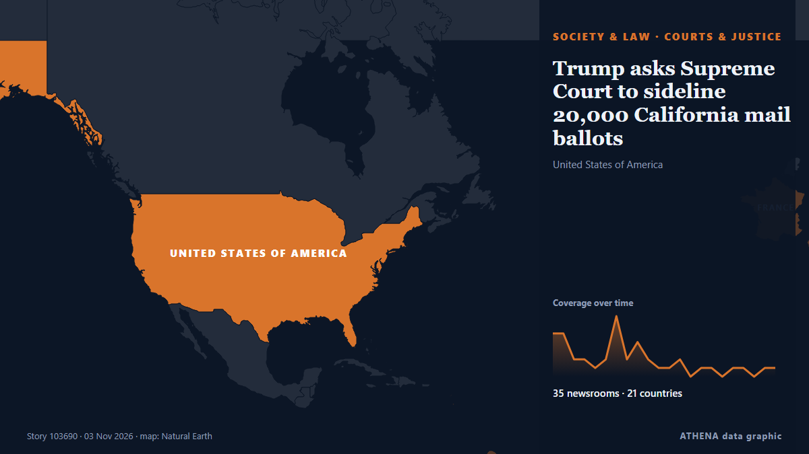

Trump asks Supreme Court to sideline 20,000 California mail ballots

President Donald Trump's administration appealed to the Supreme Court on Monday in its push to sideline thousands of disputed California mail ballots the day before the pivotal midterm elections. from The Korea Times
Reported independently by 35 outlets in 21 countries since 2 Nov, first by NPR; coverage is still spreading. ATHENA rates the risk moderate (2.1/10), driven mainly by the severity of the harm described and its geographic and sector reach. Confidence is 85% (high), with 35 independent outlets corroborating it and an average source reliability of 74%. Newsrooms by country: United States (12), Turkey (3), United Kingdom (3). Coverage: 2 Nov to 3 Nov, 22 hours.
Why it matters: Legal and policy changes alter rights, obligations and public services for the people they reach.
What changed: 43 new reports from 35 newsrooms in the 24 hours to 3 Nov.
First reported as: DOJ asks for Supreme Court to intervene on California ballot demands
At a glance
Selected, scored and written by ATHENA's published methodology. No editor intervenes in individual events. How this is produced ›
| 02 Nov 16:34 UTC | 5 |
|---|---|
| 02 Nov 17:34 UTC | 5 |
| 02 Nov 18:34 UTC | 2 |
| 02 Nov 19:34 UTC | 2 |
| 02 Nov 20:34 UTC | 1 |
| 02 Nov 21:34 UTC | 2 |
| 02 Nov 22:34 UTC | 7 |
| 02 Nov 23:34 UTC | 2 |
| 03 Nov 00:34 UTC | 4 |
| 03 Nov 01:34 UTC | 2 |
| 03 Nov 02:34 UTC | 1 |
| 03 Nov 03:34 UTC | 1 |
| 03 Nov 04:34 UTC | 2 |
| 03 Nov 05:34 UTC | 0 |
| 03 Nov 06:34 UTC | 1 |
| 03 Nov 07:34 UTC | 1 |
| 03 Nov 08:34 UTC | 0 |
| 03 Nov 09:34 UTC | 1 |
| 03 Nov 10:34 UTC | 1 |
| 03 Nov 11:34 UTC | 0 |
| 03 Nov 12:34 UTC | 1 |
| 03 Nov 13:34 UTC | 1 |
| 03 Nov 14:34 UTC | 1 |
Why these numbers
Importance
Risk
Confidence
The reporting — who reported it, and when
headline as published · opens the original- NPR · United StatesThe Supreme Court rejects a DOJ push to separate California ballots
- The Straits Times · SingaporeUS Supreme Court rejects Trump administration in California ballot fight
- The Hill · United StatesTrump administration brings California ballot fight to Supreme Court
- CNBC World · United StatesSupreme Court rejects DOJ's bid to block California from counting disputed ballots
- The Korea Times · South KoreaTrump asks Supreme Court to sideline 20,000 California mail ballots
- PBS NewsHour · United StatesTrump administration appeals to Supreme Court to sideline 20,000 disputed California mail ballots
- Anadolu Agency (English) · TurkeyTrump administration asks Supreme Court to segregate 20,000 California mail ballots over noncitizen voting claims
- Courthouse News · United StatesTrump asks Supreme Court for help in bid to set aside California ballots
- CBC News · CanadaU.S. Supreme Court rejects Trump administration's bid to set aside California mail ballots
- SCOTUSblog · United StatesSupreme Court declines Trump administration's request to intervene in California ballot dispute
- Al Jazeera English · QatarSupreme Court rejects Trump request to set aside California ballots
- DW English · GermanySupreme Court rejects Trump bid to block 20,000 California ballots
- Forbes Business · United StatesCould Supreme Court Impact The Midterms? California Ballot Case Could Be First Of Many At High Court
- ABC News Australia · AustraliaDaily briefing: Trump administration appeals to court in California ballots stoush
- The Daily Star — page reader · BangladeshTrump administration takes California ballot fight to Supreme Court
- The Independent · United KingdomNewsom braces for ‘grave’ election threat after Supreme Court shoots down Trump’s California ballot battle
- Free Malaysia Today · MalaysiaTrump admin asks top court to set aside 20,000 California ballots
- The Hill · United StatesSupreme Court rejects Trump administration's bid to set aside 20,000 California ballots
- The Guardian · United KingdomSupreme court rules against Trump over bid to force California to set aside ballots
- Deadline · United StatesTrump Loses At SCOTUS As High Court Rejects California Noncitizens Voting Request On Midterms Eve
- NDTV · IndiaUS Supreme Court Rejects Trump's Push To Set Aside California Ballots
- Anadolu Agency (English) · TurkeyUS Supreme Court rejects bid by Trump administration to set aside 20,000 California ballots
- Forbes Business · United StatesSupreme Court Turns Down Trump Administration’s Request In California Ballot Dispute
- Arab News · Saudi ArabiaSupreme Court rejects Trump administration push to set aside thousands of California ballots
- FBC News · FijiTrump administration takes California ballot fight to Supreme Court
- TRT World · TurkeyUS Supreme Court rejects request by Trump admin to block California mail-in ballots
- Ada Derana · Sri LankaUS Supreme Court rejects Trump, lets California count all ballots
- New Straits Times · MalaysiaUS Supreme Court rejects Trump bid to set aside 20,000 California ballots
- KQED News (San Francisco) · United StatesSupreme Court Declines to Hear Trump’s California 20,000 Ballot Case. Here’s What to Know
- Rappler · PhilippinesUS Supreme Court rejects Trump, lets California count all ballots
- Times of India · IndiaUS Supreme Court rejects Trump's push to isolate 20,000 California ballots
- BBC News · United KingdomSupreme Court rejects Trump's request to stop California counting disputed votes
- Xinhua (English) — page reader · ChinaU.S. Supreme Court rejects White House's bid to temporarily block California mail-in ballot count
- Capital FM · KenyaSupreme Court rejects Trump’s request to stop California counting disputed votes
- Express Tribune · PakistanUS Supreme Court rejects Trump, lets California count all ballots
- News of Bahrain · BahrainUS Supreme Court Rejects Trump Bid to Block California Mail-In Ballots
- AllAfrica · AFRKenya: Supreme Court Rejects Trump's Request to Stop California Counting Disputed Votes
- France 24 English · FranceUS Supreme court rejects Trump request to set aside 20,000 California ballots
- SCOTUSblog · United StatesCourt won’t intervene in California ballot dispute
- The Straits Times · SingaporeTrump's Supreme Court winning streak in election cases screeches to a halt